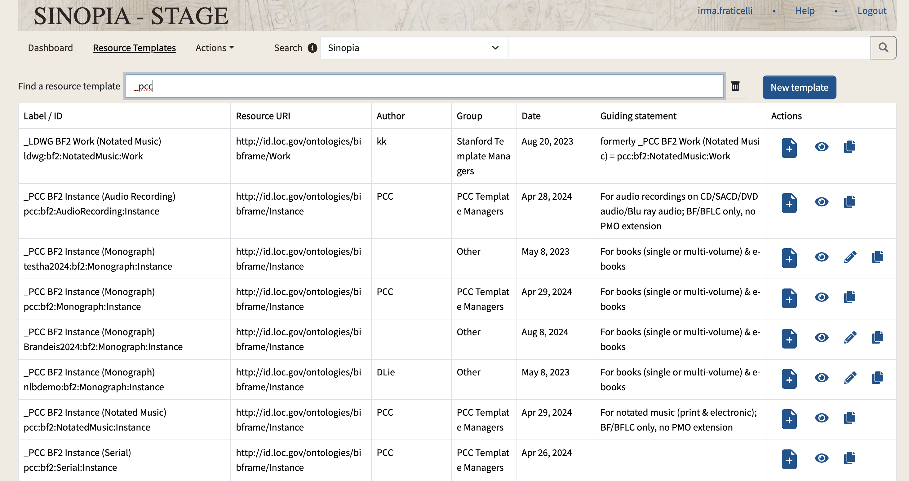
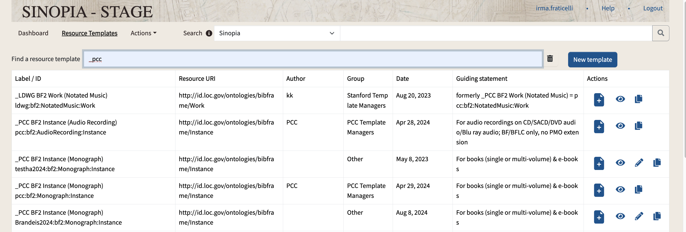
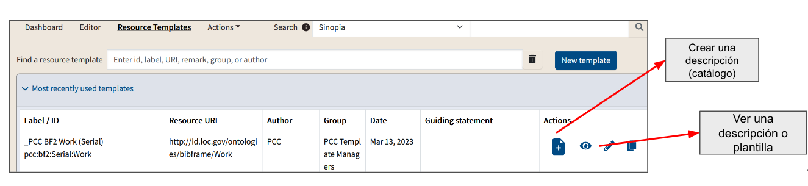
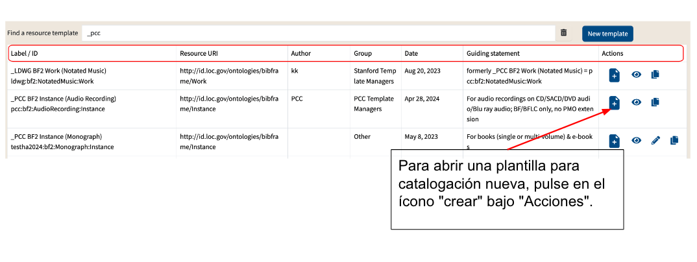

Módulo 4: Sobre las plantillas PCC
Traducción al español por Daniel Mugaburu
2024-10-24
Alcance de este módulo
- El concepto de una plantilla
- La selección de la plantilla PCC adecuada
- La navegación a través de una plantilla
- Los tipos de datos que puedes ingresar en Sinopia
¿Qué es una plantilla de recursos?
Puedes pensar en una plantilla de recurso de Sinopia, o plantilla, como una receta. Al igual que una receta te dice qué ingredientes usar, una plantilla te dice qué elementos puedes usar para catalogar un elemento particular.
Para cada clase, una plantilla especifica cuales propiedades son relevantes y cómo registrar datos para esas propiedades.
Una plantilla actúa como un perfil de aplicación de metadatos. Para obtener más información sobre perfiles de aplicación de metadatos, consulte el Grupo de Tareas de PCC sobre Perfiles de Aplicación de Metadatos.
Plantillas de PCC: Antecedentes
Para fomentar la adopción de Sinopia y la estandarización de la catalogación en Sinopia, el PCC ha proporcionado un conjunto de plantillas basadas en BIBFRAME para su uso. Estas plantillas de PCC fueron desarrolladas basadas en las mejores prácticas que surgieron del uso inicial de Sinopia.
A partir de la publicación de este módulo, las Plantillas PCC están disponibles solo en el sitio web de Stage (stage.sinopia.io)
Plantillas de PCC: ¿Qué está cubierto?
Sinopia ofrece plantillas de PCC para Obras, Manifestaciones e Ítems, tanto para Monografías como para Publicaciones Seriadas.
Cada nivel del modelo BIBFRAME (Obra, Manifestación, Ítem) tiene su propia plantilla.
El Módulo 8 explica cómo hacer enlaces entre descripciones creadas a partir de las plantillas.
Práctica de catalogación
- Las plantillas de PCC Sinopia enlazan a las directrices originales de RDA siempre que sea posible, y a veces proporcionan instrucciones adicionales sobre la práctica de catalogación.

- A medida que los catalogadores de PCC adquieran experiencia con las plantillas de PCC, surgirán y serán documentadas prácticas recomendadas adicionales.
Encontrando Plantillas del PCC
Para comenzar a catalogar en Sinopia, primero necesita seleccionar la plantilla adecuada. Sinopia contiene muchas plantillas, la mayoría de las cuales no son para uso en catalogación PCC.
Para ver solo las plantillas PCC primarias, pulse en la pestaña Plantillas de Recursos (Resource Templates). En el casillero Buscar un recurso (Find a resource template), escriba “_pcc” (guión bajo pcc).

¿Qué plantillas usar?
- Al observar la lista de plantillas mostradas cuando se hace una búsqueda PCC, se puede notar que los nombres de las plantillas en la parte superior de la lista comienzan con un guion bajo. Estas son las plantillas que deseas abrir.
- Estas plantillas representan los niveles principales en el modelo BIBFRAME, como _PCC BF2 Work (Monografía).
- Las plantillas mencionadas más abajo, como Cobertura Geográfica (Geographic Coverage), son plantillas más pequeñas que se utilizan dentro de las plantillas de Obra, Manifestación e Ítem. Aunque es posible abrir estas “subplantillas” por separado, en la práctica, solo necesitarás abrir las plantillas que comiencen con un guión bajo.

Encontrar plantillas desde el Panel de control (Dashboard)
La pestaña del Panel de Control es una forma rápida de acceder a tus plantillas abiertas recientemente. Aparecerán primero en la pantalla bajo “Plantillas recientes“ (Recent templates).
Cuando comience por primera vez en Sinopia, esta lista estará vacía.

Encontrar plantillas desde la pantalla de Plantillas de recursos (Resource Templates)
La pantalla de plantillas de recursos (Resource Templates) muestra primero las plantillas que has utilizado más recientemente.
Pulse en el encabezado para abrir la lista

Íconos asociados con plantillas
Los botones e íconos junto a las plantillas le permiten crear una nueva descripción a partir de una plantilla, ver una versión de la plantilla como datos enlazados, editar la plantilla o copiar la plantilla.
No tendrá todos los íconos; su apariencia dependerá de sus permisos
Crear, editar y copiar plantillas no están dentro del alcance de este entrenamiento; solo los primeros 2 íconos son relevantes aquí

Abriendo una plantilla de PCC para catalogación
- Etiqueta/ID: Nombre de plantilla
- URI del recurso: Cuando se usa esta plantilla para la catalogación, el recurso resultante tendrá este URI como su tipo, o clase. Sinopia proporciona los siguientes detalles sobre cada plantilla:
- Autor: Nombre de la organización o persona que diseñó esta plantilla
- Fecha: Plantilla de fecha creada o modificada
- Declaración guía: Notas sobre la plantilla
- Grupo: El grupo Sinopia que posee la plantilla y puede editarla
- Acciones: Acciones que se permiten llevar a cabo con esta plantilla en particular

Navegando una plantilla: Pestaña del editor
Cuando pulse en el ícono “crear”, Sinopia abrirá la plantilla para catalogar en la pestaña Editor.
Esta es la sección donde ingresará los datos de catalogación y creará una descripción de recursos basada en BIBFRAME
Las siguientes diapositivas muestran cómo navegar a través de una plantilla en la pestaña Editor. Los módulos posteriores explicarán cómo ingresar datos en la Plantilla.

Navegar una plantilla: Barra lateral
- La barra lateral izquierda muestra una vista general de la plantilla y te da una forma rápida de moverte de una sección a otra.

Navegar una plantilla: Campos
En el lado derecho de la ventana están los campos en sí mismos. Cada campo donde puede ingresar datos corresponde a una propiedad de BIBFRAME.

Navegar una plantilla: Barra lateral
Cuando haces clic en el nombre de un campo en la barra lateral izquierda, el lado derecho de la ventana muestra el campo correspondiente.
Navegar una plantilla: Campos obligatorios
Los campos obligatorios están identificados por un asterisco (*). Si deja un campo obligatorio en blanco, Sinopia no le permitirá guardar una descripción y resaltará los campos vacíos en rojo.
Navegar una plantilla: Subplantillas
Una simple lista de campos no puede expresar todo lo que se desea expresar en datos enlazados. Por ejemplo, una Obra tiene un Colaborador, y el Colaborador tiene un Rol. Si la Obra tiene más de un Contribuidor, una simple lista de campos no puede expresar cual Rol va con cada Contribuidor. � Este tipo de situaciones se manejan mediante la inclusión de una plantilla más pequeña para que se termine con un conjunto de campos que permanecerán juntos y funcionarán como una unidad. Captura de pantalla de
Ejemplo de Subplantilla: bf:Contribución
bf:Obra bf:Contribución bf:Rol bf:Agente
Métodos de entrada de datos en Sinopia
Literales Utilizado para registrar datos transcritos No son accionables por máquina (machine-actionable), pero son legibles para los humanos
Búsquedas
Utilizado para ingresar URIs y etiquetas de vocabularios externos Las plantillas en Sinopia usan dos métodos básicos para ingresar datos: Literales y búsquedas. Módulo 5: Ingresando Literales y Módulo 6: Ingresar datos usando búsquedas explican cómo funcionan estos métodos. Captura de pantalla de
Cómo expandir una subplantilla
El campo se expande para mostrar un campo literal o un campo de búsqueda. Los siguientes ejemplos utilizan la plantilla _PCC BF2 Instance (Monografía). Los campos internos de una subplantilla generalmente no están “abiertos” o “expandidos” cuando se abre la plantilla. Pulse en el botón +Agregar para expandir un campo.
Múltiples niveles de subplantillas
En este ejemplo, ampliamos el Alcance (Extent), pero aún no se han abierto los campos para Notas. Se debe expandir nuevamente con +Agregar (+Add).
Usando una subplantilla más de una vez
Si tiene más de un Título Variante, necesita duplicar todo el submodelo, utilizando el botón +Agregar otro (+Add another). Las propiedades en una subplantilla funcionan juntas como grupo. Aquí puede ingresar todas las partes del título variante bajo la clase matriz bf:VariantTitle.
Resultado de +Agregar otro
26 Después de hacer clic en +Agregar otro (+Add another), aparecerá una subplantilla duplicada completa.